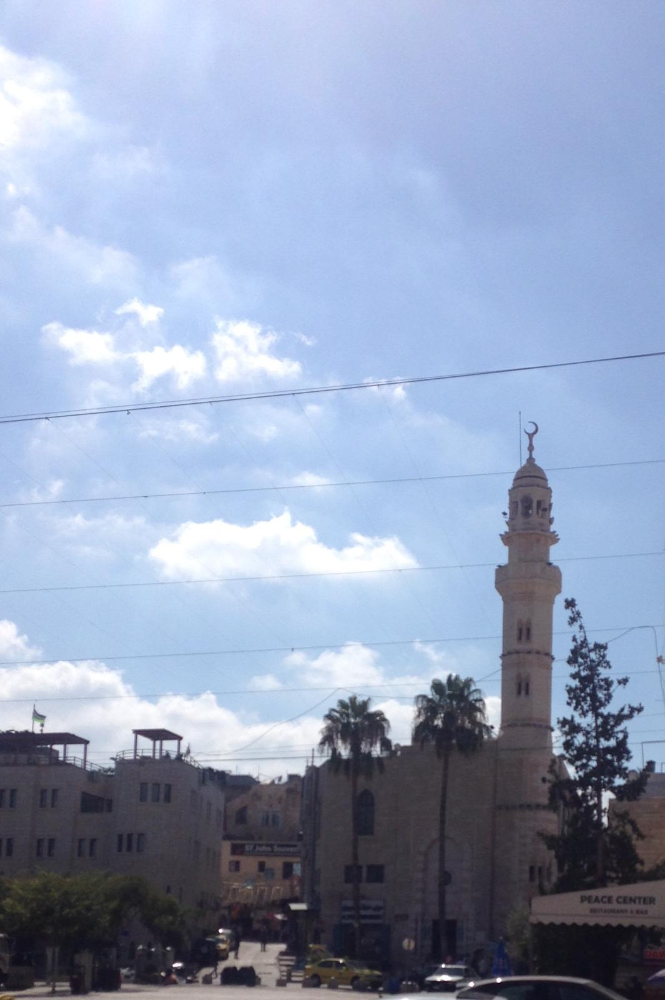
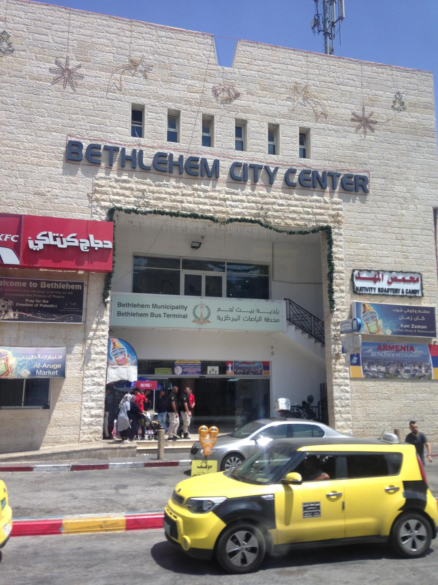
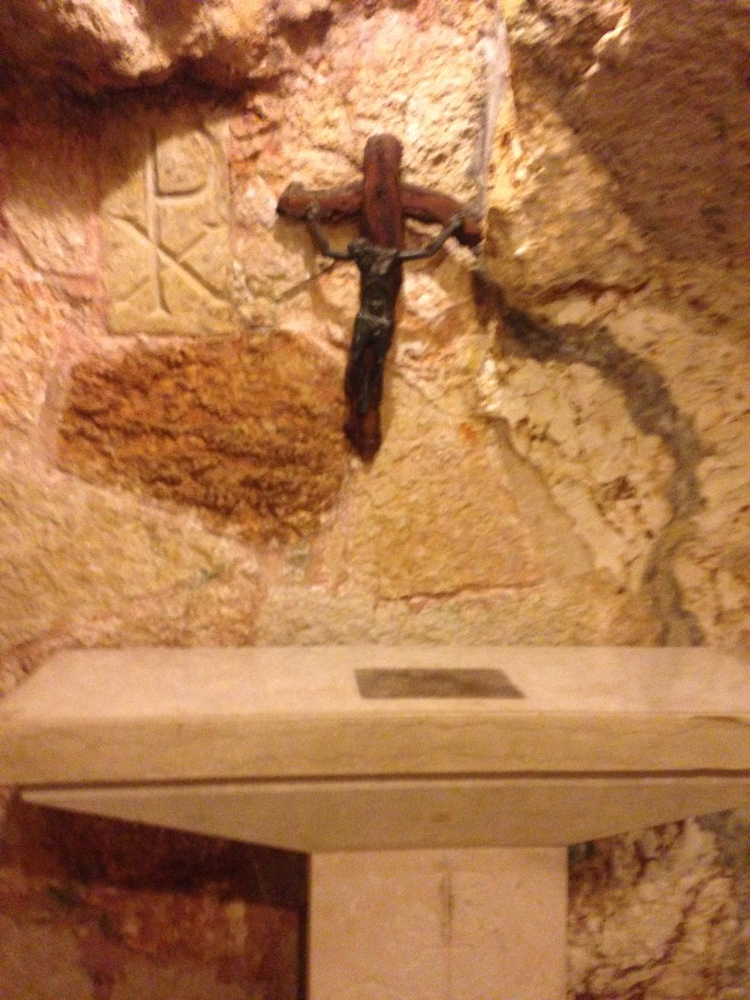
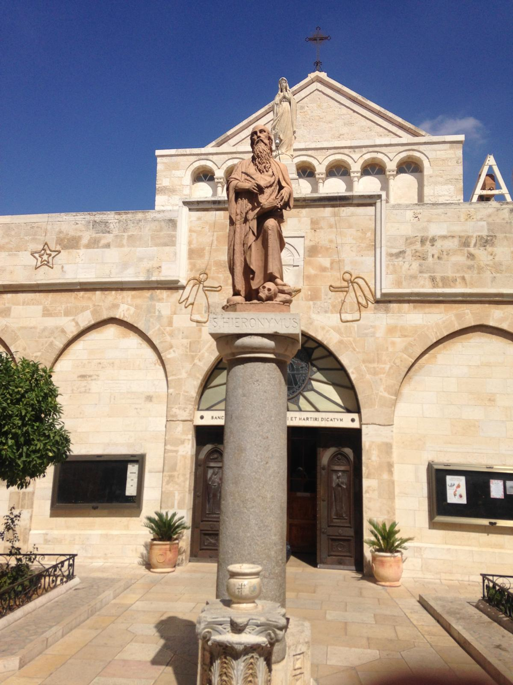
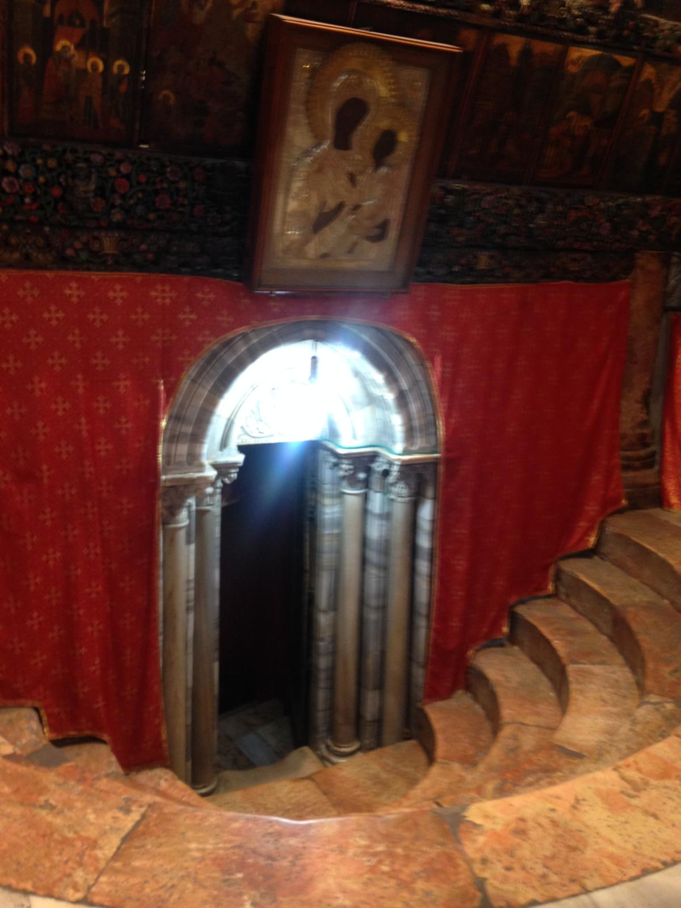
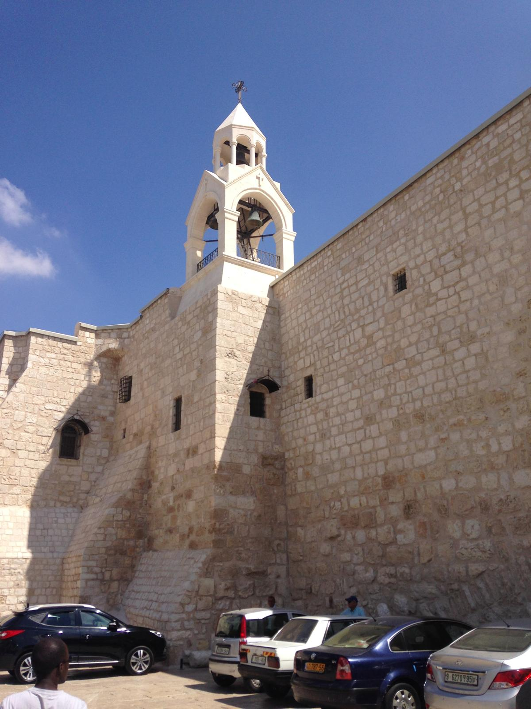
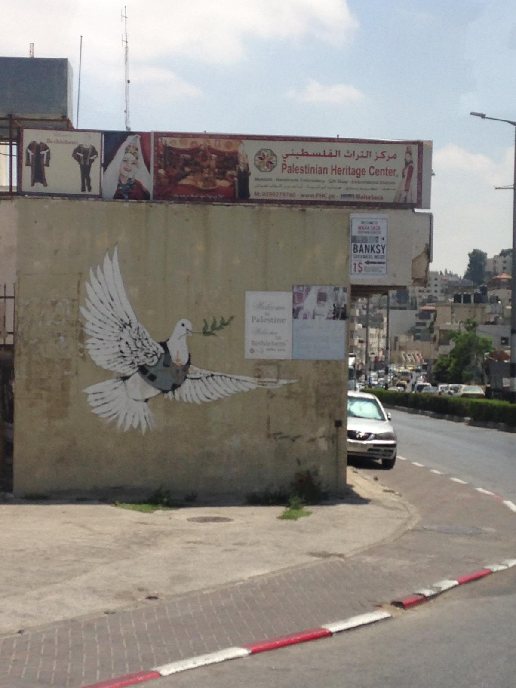
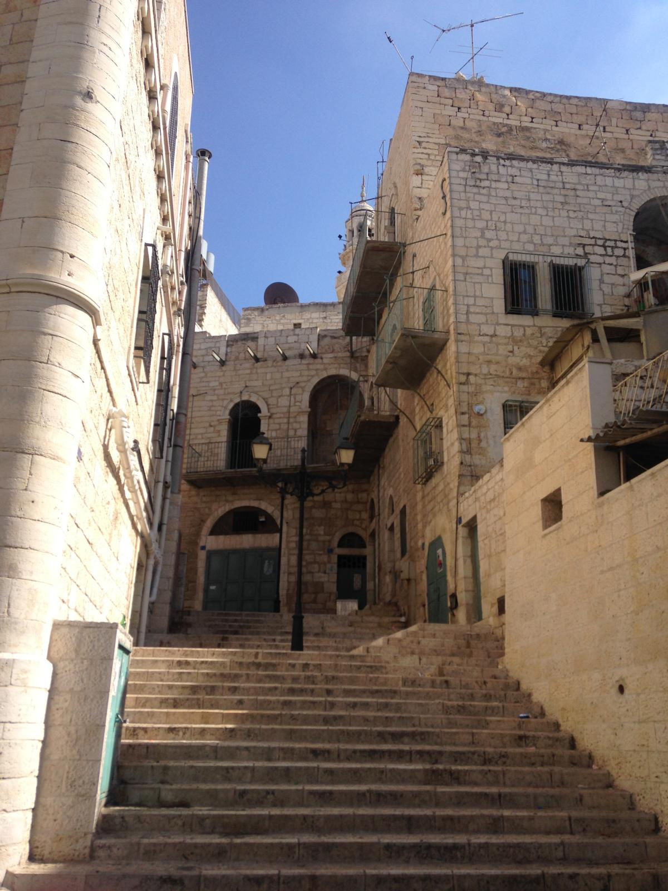

When Nicola's Holy Land tour crossed from Jerusalem into the Palestinian territories in 2018, she wasn't entirely sure what to expect. What she found was a beautiful, bustling, living city — full of people going about their day, stalls selling food and souvenirs, one of the oldest Christian churches in the world at its heart, and a warmth and hospitality that she hadn't anticipated. Bethlehem was one of the great surprises of the entire trip.
The crossing from Jerusalem into the Palestinian territories at the checkpoint was, in practice, completely straightforward for the tour group — a brief formality and then through. What made it memorable was what happened next — the Israeli guide, who had been with the group since Tel Aviv, handed over at the checkpoint to a Palestinian Muslim guide who would take them through Bethlehem.
It is a practical reality of the region — Israeli guides cannot operate in the Palestinian territories and Palestinian guides cannot operate in Israel. But experiencing it in person, watching the handover happen at the crossing point, was a quietly powerful reminder of the complexity of the place you were in.
The Muslim guide, like the Jewish guide before him, was warm, knowledgeable and entirely apolitical — focused entirely on the history, the significance and the stories of the places they were visiting. It was a genuinely impressive piece of professional hospitality from both sides of a complicated divide.
The first thing that struck Nicola about Bethlehem was how alive it was. After several days visiting ancient ruins, desert landscapes and the solemn grandeur of Jerusalem, Bethlehem felt busy, vibrant and thoroughly lived-in. People going about their day, market stalls, traffic, noise — a real city, not a museum piece.
Bethlehem sits in the West Bank about 10km south of Jerusalem, at an altitude of around 775 metres above sea level. It is one of the oldest continuously inhabited cities in the world and home to a significant Christian community as well as a Muslim majority population. The city has a character and energy that is entirely its own.


The Church of the Nativity is the centrepiece of Bethlehem and one of the most extraordinary buildings Nicola had ever stood inside. Built over the site traditionally identified as the birthplace of Jesus, the original church dates to around 327 AD — making it one of the oldest Christian churches in the world and a UNESCO World Heritage Site.
From the outside the church is grand and imposing — a large stone facade with the famous Door of Humility, a deliberately small entrance that forces visitors to bow their heads as they enter (originally designed to prevent horsemen from riding straight in). Inside, the scale and the antiquity of the place is immediately apparent. Ancient mosaics, columns worn smooth by centuries of hands, the smell of incense, the sound of prayers in multiple languages simultaneously.
Descending into the Grotto of the Nativity below the main church — the traditional site of the birthplace of Jesus — is one of those genuinely once-in-a-lifetime moments. The star marking the spot on the marble floor, the candles, the atmosphere of accumulated centuries of prayer and pilgrimage. Grand, ancient and deeply moving.



Manger Square — the large open plaza in front of the Church of the Nativity — was busy and atmospheric when the group visited. Stalls, cafés, tourists and locals mixing together in front of one of the world's most significant religious buildings. It has the energy of a proper town square, not just a tourist stop.
The separation wall — the concrete barrier that runs along and around Bethlehem — is impossible to miss and impossible to ignore. In person it is more imposing than photographs suggest — a solid concrete structure that dominates the landscape around parts of the city. It has become famous worldwide for the street art on its surface, including works by the elusive artist Banksy whose pieces have made the wall one of the most photographed surfaces in the world.
The dove of peace — painted on the wall — is one of the images most associated with Bethlehem internationally. Seeing it in person, in context, is a more sobering experience than seeing it on a postcard. Whatever your political views on the region, the wall is a physical reality that changes the feel of the city around it in ways that are hard to describe without standing there yourself.



One of the oldest Christian churches in the world — built over the traditional birthplace of Jesus. Grand, ancient and deeply atmospheric. The Grotto of the Nativity below is unmissable.
The lively main square in front of the Church of the Nativity — busy with locals and tourists alike. A proper living city square, not just a tourist set piece.
The famous concrete barrier with its extraordinary street art — including Banksy's dove of peace. A sobering and thought-provoking part of any Bethlehem visit.
Bethlehem is a real, living city — busy, bustling, full of character. Walk the streets, visit the market, have a coffee. It is far more vibrant and welcoming than many visitors expect.
Bethlehem is about 10km from Jerusalem — most visitors come as part of an organised tour. The crossing into the Palestinian territories is at a checkpoint and is generally straightforward for tourists on organised tours.
4-5 hours is enough to see the main sites comfortably — the Church of the Nativity, Manger Square, the separation wall and a walk through the city. Most organised tours include this as a half-day visit.
Modest dress is expected at the Church of the Nativity — shoulders and knees covered. The church can be busy so arrive with patience and be respectful of others worshipping.
Spring and autumn are the most comfortable times to visit — the summer heat can be intense. Christmas in Bethlehem is a unique experience but the city is at its busiest.
Bethlehem is almost always visited as part of a wider Holy Land itinerary — and an organised tour is by far the best way to experience both Israel and the Palestinian territories. TourRadar has a range of Holy Land pilgrimage tours that include Bethlehem as part of the itinerary.
Disclosure: Affiliate link — if you book through it we may earn a small commission at no extra cost to you.
Bethlehem day trips from Jerusalem, Church of the Nativity tours, Holy Land guided experiences and more.
Disclosure: If you book through these links we may earn a small commission at no extra cost to you.
Common questions
Bethlehem is best visited as part of a wider Israel itinerary — read our full Israel guide for the complete picture of an 8-day Holy Land pilgrimage including the Sea of Galilee, Jerusalem, Masada and the Dead Sea.
Affiliate disclosure: if you book through our links we may earn a small commission at no cost to you.